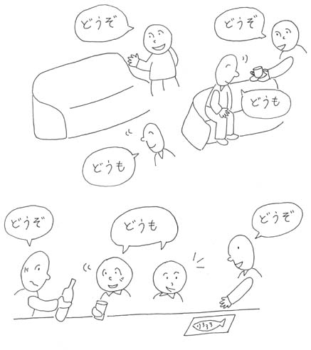

Pokud jste měli někdy příležitost slyšet Japonštinu, mohli jste si všimnout, jak často používají "sumimasen（すみません）". Stejně tak, jestli jste slyšeli mluvit Japonce Česky, mohli jste postřehnout, že občas zaměňuje "omluvte mě" a "omlouvám se". Protože Japonština používá pro oboje tentýž výraz.
"Dōzo（どうぞ）" je pobídnutí("Prosím"). Nejsnadnější odpovědí je "dōmo（どうも）". "Dōmo arigatō gozaimasu（どうもありがとうございます）" je velmi zdvořilá forma fráze "Děkuji pěkně". Nejčastější použití je "arigatō（ありがとう）" nebo "dōmo（どうも）".
